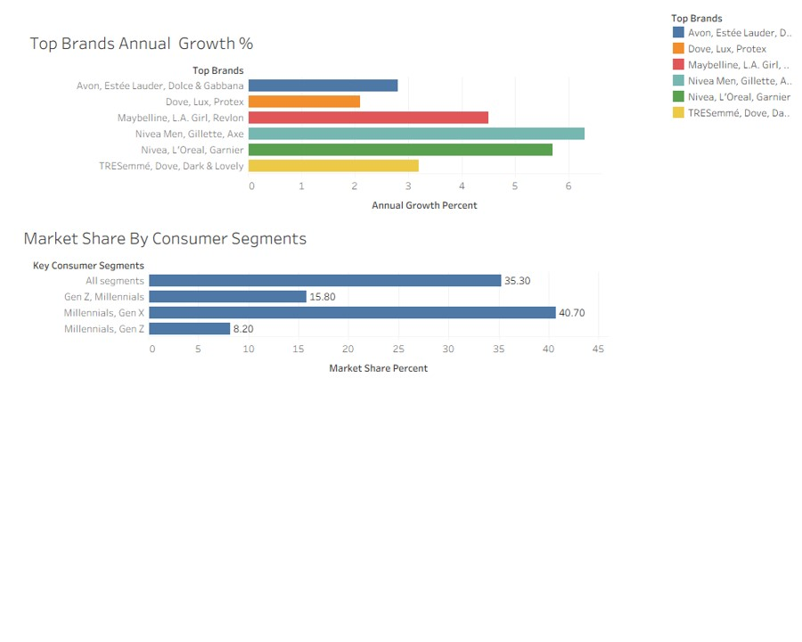
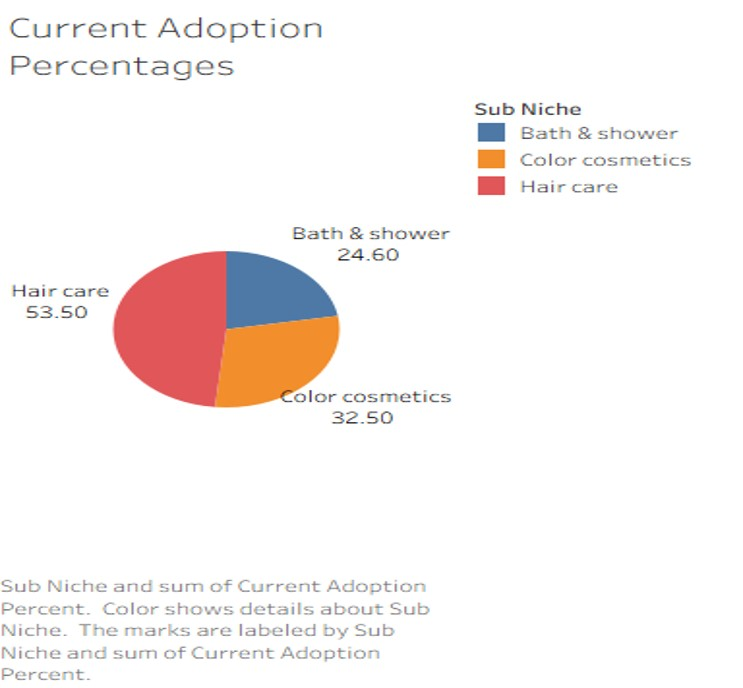
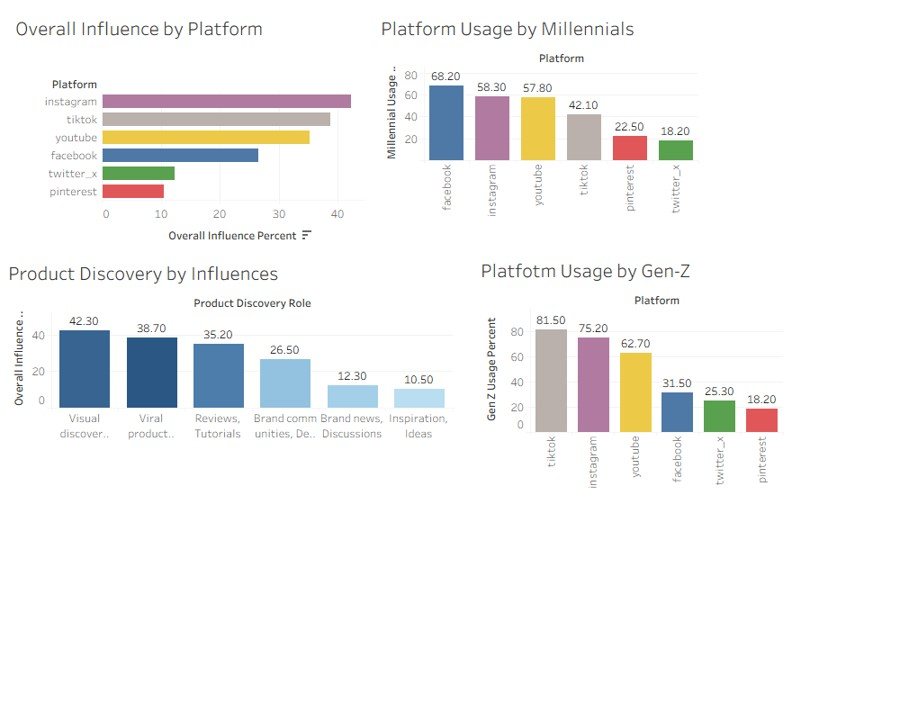

Projects
Project 1: Beauty Influencer Marketing Analysis
High Spend Catagories
Objective: To analyse which beauty sub-niche brand in South Africa have the highest overall market size and average annual consumer spend and to recommend which content upcoming UGC creators can vertical on to get paid gigs and campaigns.


Recommendation: Based on my analysis I discovered that the Hair Care sub-niche is the top adopted category by consumer, which means there is a high demand for hair care products than other in the beauty niche. Hair care taking 53.30% of the sub-niche, and the top brands being TRESemme,Dove and Dark & Lovely.
Disclaimer:This synthetic data is derived from aggregate statistics, not individual-level observations.While patterns and relationships are preserved, extreme outliers may be underrepresented.
Social Media Dependecy
Objective: To analyse which social media platform influences product discovery the most and which consumer age segment have an overall influence.

Output: Based on what I discovered is that beauty Sub Niche is Mostly Influenced by 2 platform across different ag groups. Instagram & Tiktok being the leading platforms of dependency.
Disclaimer:This synthetic data is derived from aggregate statistics, not individual-level observations While patterns and relationships are preserved, extreme outliers may be underrepresented.